The MAJestic leadership controls all MAJestic members. However, the organization controls and authorize programs and sub-programs upon the limitations of our understandings.
When we first agreed to work with the <redacted>, we thought of it as a simple technology transfer exercise. However, over time, as we expanded our understandings of the numerous species that we worked with, we began to obtain glimmerings of what we were REALLY working with and involved in.
Thus, we discovered that many times we thought we were doing one thing for one objective, only to find out (later) that we were doing one “piece of a puzzle”, that would eventually fit into a much larger puzzle or plan…
Introduction
There is a lot going on here in my narrative. In order to make sense out of what is going on, I am afraid that we will have to cover some ground and understanding regarding what our reality is.
This is because traveling through a dimensional portal is impossible in a Newtonian reality. It is absolutely, and positively impossible.
We are handicapped by our limited experiences, our knowledge, and our understandings. None of what we know allows for “dimensional doors”, no matter what you call them. That is, unless you make allowances for Magic…
Since most Americans have been “dumbed down” to a serf / peasant level (for reasons of political expediency), it would be very difficult for most to grasp the reality of what I describe. This includes what transpired during my first portal egress. (Not to mention, understanding autonomous MWI egress at will.)
Of course, I could simply launch into a statement of what is going on, and leave it at that. However, that is not in the best interests of this dialog. Our world is populated with people of all sorts of backgrounds, experiences, beliefs, and understandings. To best provide a real understanding of what is going on, some background information must be presented. It need not be complicated, but it does need to be presented.
With that in mind, let’s take a look at what a “dimension” is. For throughout my narrative I repeatedly use the term “dimensional travel”. Obviously what just transpired in the previous posts were perplexing. For me to simply state “oh, it was dimensional travel”, or “I entered a dimensional door”, or “my dimensional reality was altered” would be confusing and inappropriate at this time.
Maybe it would be best if I said that I exited from our reality and went elsewhere.
I exited our reality and went elsewhere.
The Real World
We, as humans, are unable to see the real world. We are unable.
Our physical senses are unable to see the way things really are. Our perception of time is wrong. Our ideas of distance are wrong. What we think about the universe, intelligence, and life are wrong. Our view of life is terribly faulted.
Our view of life is all incorrect.
What we do know, or at least think that we know, is not distributed throughout the population evenly. Terms used by certain people have completely different meanings to other people. This can be from simple English language terms, to scientific understandings. Many times complete and unified understandings are not obtainable.
Consider the word "niggerdly". It means miserly · parsimonious · close-fisted . Yet, there is a sizable proportion of the American population that would consider this to be a racist insult.
This can be prevented if we define exactly what we are referring to “up front” in the beginning.
Thus, by using our brains, and by mastering the language of the universe we can begin to gain some basic understandings of it. With this understanding comes innovation and that perhaps someday soon, we will all be able to the see the universe as it really and actually is.
It’s a Quantum Reality
So what is our “reality”?
One theory is that consciousness is created on a quantum, sub-atomic scale through energy which is constantly contained in the universe. The theory is based on Einstein’s famous quote, when he said: “Energy cannot be created or destroyed, it can only be changed from one form to another.” Dr David Hamilton said all consciousness is and always has been in the universe through quantum particles, and when you are born, it is channelled into a physical being. -The Express (Pretty crude understanding of our reality. Heh.)
This section discusses what it is in accordance with the latest theories. Mind you, I am not hip and up with the latest theories. I am a layman who follows this subject out of interest. I am more a hobbyist and a “dabbler” rather than an expert. I am (very much) like the railroad engineer who runs the big steam locomotive engines of the 1930’s who reads up in thermodynamics in his spare time.
According to the “latest” theories, our universe is composed of small things known as “quanta”.
Quanta is (for our purposes) the smallest “combination” of shapes that form the building blocks” of our universe. Since our universe is our actual reality, quanta is what our reality is made up of. Our reality is one filled with quanta.
Quanta form shapes and patterns that our physical bodies can observe and measure. Thus they define our reality and they help shape our experiences.
Since I discuss the “world” of quanta so frequently, maybe it is time to discuss the realms of where quanta exist. I do not think that it is a sufficient explanation to give to the reader that “quanta are ubiquitous”; that it is everywhere. That is true, but (again) fails to convey true and real meaning. Instead, perhaps we should look at the properties of this fundamental quanta as it pertains to where it disappears to.
Relative to a person living in the physical world, quanta seems to move about. This behaves in strange ways. It reacts with other particles, often unseen, and pops in and out of observed space. What is it doing? Where is it going, and whence did it come from? These are the questions that I try to attempt to answer here.
Well, for starters; quanta is everywhere. Every atom is composed of groups of quanta called particles. So anything made up of atoms is, in turn made up of the “stuff” of atoms; quantum particles. But we cannot perceive it due to the limited nature of our (coarse) senses. It is too small; too tiny to see. We have to infer it’s presence by theory and conclusions through observation of experiments.
Smaller than Quanta
Additionally, the latest theories posit that quanta is made up of even smaller components. These go by different names and concepts. There are those that follow the belief that these smallest components of quanta are mere vibrating “strings”. Others go into various detailed tangents regarding branes and theories regarding it.
The Unseen
Our (scientific) experiments tell us many interesting things; things far to numerous to mention here. But one thing is clear. There is an “unseen” component to the world that we live in. We can see the physical world by our physical senses, but we cannot see the “other” world. Our physical senses are limited. They cannot perceive it. Thus, this lack of perception has caused us to call it the “unseen world”.

To “underline” what was just stated; our reality (and our universe) is broken up into two distinct realities. These two realities are “the seen” (by our physical senses, and by extension, our devices and mechanisms), and the “unseen”. The “unseen” elements of our reality are what we cannot sense, and what our devices and mechanisms (as of current contemporaneous science) can not sense.
The universe and our reality is broken down into two distinct parts. They are;
- The seen. These are things that we can perceive either by ourselves or with equipment.
- The unseen. These are things that we are unable to perceive or sense.
Ah… the frustration!
There are those whose limited mindset permits them from accepting anything that they cannot physically perceive. They do not believe in “X-rays” because they cannot see them. They do not believe in thoughts, memories or ideas. These things are not viewed directly, but rather have to be inferred from, and cause a great deal of consternation in regards to physical communication.
In a like way the concepts of spirits, heaven, and the “unseen” are ridiculed, not because they cannot be seen, but rather that the abstract concepts of them cannot be adequately conveyed to others of a mere physical understanding.
This is a problem, that I believe, stems from the “traditional” understanding of what “heaven” is.
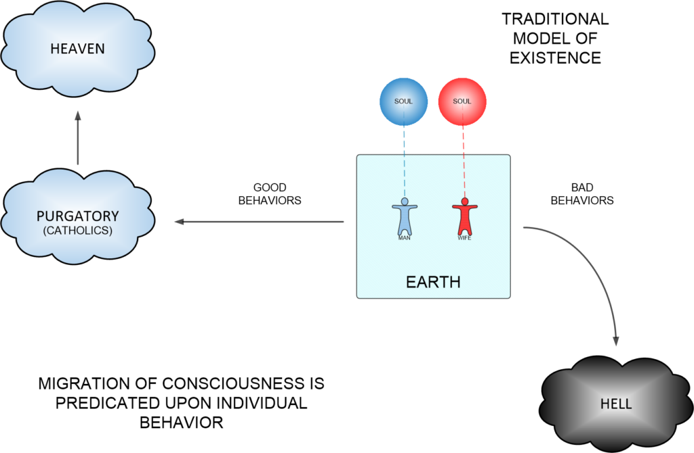
Viewed from this traditional understanding, the prism through which we can view the unseen becomes difficult to conceptualize. In fact, there are many who try to link the traditional so that it is in agreement with modern discoveries and (yes indeed) theories of our existence.
That’s a pretty pointless endeavor.
The Traditional Model
The traditional model handicaps us. Because in that model everything that exists can be seen and viewed by humans as long as they are alive. If you cannot see or perceive it, then it does not exist, and it is part of the “spiritual” realm. Which is, of course, a realm that you can only find out about when you die.
Forget Tradition!
To really understand what our universe is, and to understand what our reality is, one must FORGET the traditional models of what heaven and reality actually is. Throw it all away. Ignore it. It is wrong. It is terribly, and awfully incorrect. Throw it all away!
The only way our physical bodies can resolve the unseen is through the rigors of mathematics. Unless the two people understand the language of mathematics and the physical relationships involved, they will not be able to communicate to each other what they cannot see. This includes quanta and the realms where the quanta disappear.
Indeed, quanta are pervasive in both the physical and the “unseen” worlds. These “unseen worlds” are other elements of the universe that we, as humans, are unable to perceive. The so-called “unseen worlds” are higher energy states of quanta; the states where the vast bulk of quanta exist in. But though thought, as well as reasoning and deductive inference, we can understand the nature of the universe. And, at that we can best understand how things work regarding quanta and the physical world.
In other words, we can reason what the “unseen reality” actually is. We can use mathematics to map out our reasoning strategy.
To this end, let us look at the “other places” that our mathematical language and physical experiments point to.
The other “places”
Let’s consider what these other “places” are. What are they?
- The interface between the “Mental” and the “Casual” plane?
- Purgatory?
- Vyahrtis?
- Cat Heaven?
- A Dimensional Construct?
Indeed, these “other places” go by many names.
Most mathematicians call these places “dimensions”, while spiritualists call these places by various names often referring to “levels of heaven”. To add confusion there are other terms often used in different contexts by different people. This adds a great deal of confusion between people of different communication ability; a scientist would have trouble discussing what heaven is compared to a spiritualist discussing what a dimension actually is. Yet both are actually trying to describe the same thing.
Imagine that!
Let us spend some time discussing the term “dimensions”. It is an often abused term with many such definitions and understandings. Well, I am not a linguist, but I will try to elaborate in what I personally consider to be a “dimension” and its relevance to our subject at hand. I do this in the interests of communication.
There are so many ideas and concepts of what a dimension is, and what a dimensional level is that it all becomes imprecise and useless. Because of this, we need a shared structure; and understanding. We can use mathematics.
Mathematics is the language used to describe what Heaven is
“In five years there will be a thousand Keedoozles throughout the U.S…” -Clarence Saunders
Let’s begin with what we know of as “conventional science”. As stated earlier, our conventional scientific belief is that everything in the physical universe is made up of very tiny string like forms. This theory or belief is known as “Super-string theory”. This is all part of our scientific need to create or generate an overall guiding Theory of Everything (TOC).
String theory, with all of its difficulties, is by far the most promising route to one of the most long-lasting and ambitious goals of natural science: a complete understanding of the microscopic laws of nature. In particular, it is by far the most promising way to reconcile gravity and quantum mechanics, the most important unsolved problem in fundamental physics. At the moment, it’s a notably incomplete and frustrating theory, but not without genuinely astonishing successes to its credit. The basic idea is incredibly simple: instead of imagining that elementary particles are really fundamentally pointlike, imagine that they are one-dimensional loops or line segments — strings. Now just take that idea and try to make it consistent with the rules of relativity and quantum mechanics. Once you set off down this road, you are are inevitably led to a remarkably rich structure: extra dimensions, gauge theories, supersymmetry, new extended objects, dualities, holography, and who knows what else... Most impressively of all, you are led to gravity: one of the modes of a vibrating string corresponds to a massless spin-two particle, whose properties turn out to be that of a graviton. It’s really this feature that separates string theory from any other route to quantum gravity. In other approaches, you generally start with some way of representing curved spacetime and try to quantize it, soon getting more or less stuck. In string theory, you just say the word “strings,” and gravity leaps out at you whether you like it or not.
And, the Theory of Everything…
Since Einstein, physicists have been working on a theory of everything (TOE). Logic dictates that for a true TOE, the TOE must be able to propose from first principles, why conservation of mass-energy and conservation of momentum hold. If these theories cannot, they cannot be TOEs. Unfortunately all existing TOEs have these conservation laws as their starting axioms, and therefore, are not true TOEs. The importance of this requirement is that if we cannot explain why conservation of momentum is true, like Einstein did with LFT, how do we know how to apply this in developing interstellar propulsion engines?
These tiny strings form up into different shapes and configurations. These forms are called quanta. There are specific names for each form; each one pretty cool and interesting.
- (Quantum Physics.) The quanta then compile together into groupings or particles.
- (Particle Physics.) The particles then amass into even larger physical objects called atoms.
- (Chemistry) Atoms are the building blocks of the physical world and they in turn can form into a great variety of elements.
- (Mechanics.) These elements can be in different shapes such as solid, liquid or gas, and many other quasi states in-between.
We need not worry ourselves with the physical manifestation of quanta. That is the realm of chemists, and physicists. The realm of the quanta is the domain of quantum physicists; these are the people whom study this curious and interesting subject.
The Universal Language
The language that ties all the physicists and chemists, engineers and scientists together is known as mathematics. Quanta is effected by thought and the relationship between thought and the regions where quanta dwells is the domain of spiritualists and religion. Since everyone speaks a different language in regards to their core specialty, it is understandable that there would be confusion.
Additionally, there are other considerations…
The New Scientist article The Omega Man, by science writer Marcus Chown. As Chown puts it: "Chaitin has shown that there are an infinite number of mathematical facts but, for the most part, they are unrelated to each other and impossible to tie together with unifying theorems." In other words, mathematically, there is no single, preferred set of fundamental truths. The mathematics that describes our reality is just one archipelago of self consistent postulates and theorems in a limitless ocean with infinite islands bearing no relationship to ours. Since physics is described by mathematics, this may imply that what we perceive with microscopes and telescopes and particle accelerators as ordinary physical reality is also but one tiny subset of an infinitely greater reality. Alternate realities created by other consciousnesses could be equally real yet radically different from ours.
Heaven as a Dimension described by Mathematics
According to the mathematics involved, currently the best theory of our universe is called Super-string theory.
In it, is the very interesting proposal that the universe exists in 10 different dimensions simultaneously. While we like to think in terms of a three dimensional “physical world”, “time”, and a six dimensional “spiritual world”, it is actually much simpler than that. (See elsewhere about my discussions regarding a 10 vs. an 11 dimensional universe.)
There is some very interesting work regarding octonions by way of their deep connections to string theory, M-theory and supergravity. Read about it HERE.
Just because we cannot “see” or sense something with our physical senses does not mean that it does not exist. Indeed, when someone mentions “different dimensions”, we tend to think of things like parallel universes. Which are but alternate realities that exist parallel to our own, but where things work or happened differently than in our universe. (Within my writings I refer to this as “world-line travel” to alternative realities.)
Some similar terms…
- World-line
- Time-line
- Dimensional portal or door
- MWI slide
- “What if” world
- Another “reality”
The mathematics behind this is all complex and way, way above my head. You know, guys, I was just a rider on the MWI. I did not design the equipment, install it or maintain it. I just used it. That being said, there are some interesting developments in regards to the science behind the MWI.
Consider the idea that algebra is not as fixed and a reliable tool as we would like to believe it is…
Much more bizarrely, the octonions are nonassociative, meaning (a × b) × c doesn’t equal a × (b × c). “Nonassociative things are strongly disliked by mathematicians,” said John Baez, a mathematical physicist at the University of California, Riverside, and a leading expert on the octonions. “Because while it’s very easy to imagine noncommutative situations — putting on shoes then socks is different from socks then shoes — it’s very difficult to think of a nonassociative situation.” If, instead of putting on socks then shoes, you first put your socks into your shoes, technically you should still then be able to put your feet into both and get the same result. “The parentheses feel artificial.” The octonions’ seemingly unphysical nonassociativity has crippled many physicists’ efforts to exploit them, but Baez explained that their peculiar math has also always been their chief allure. -The Peculiar Math That Could Underlie the Laws of Nature
Illustrative Fictional Adventures
There have been many great science fiction stories on this theme; some of my favorites include “Job”, and “The cat that could walk through walls” both by Robert Heinlein. In any event, a person who could “travel” from one dimension into another might find themselves in a world where there is no letter “J”, or a world where dinosaurs still exist.
However, the reality of dimensions and how they play a role in the ordering of our Universe is really quite different from this popular characterization.
Job: A Comedy of Justice is a novel by Robert A. Heinlein published in 1984. The title is a reference to the biblical Book of Job and James Branch Cabell's book Jurgen, A Comedy of Justice. It won the Locus Award for Best Fantasy Novel in 1985 and was nominated for the Nebula Award for Best Novel in 1984, and the Hugo Award for Best Novel in 1985. The story examines religion through the eyes of Alex, a Christian political activist who is corrupted by Margrethe, a Danish Norse cruise ship hostess — and who loves every minute of it. Enduring a shipwreck, an earthquake, and a series of world-changes brought about by Loki (with Jehovah's permission), Alex and Marga work their way from Mexico back to Kansas as dishwasher and waitress.
Whenever they manage to make some stake, an inconveniently timed change into a new alternate reality throws them off their stride (once, the money they earned is left behind in another reality; in another case, the paper money earned in a Mexico which is an empire is worthless in another Mexico which is a republic). These repeated misfortunes, clearly effected by some malevolent entity, make the hero identify with the Biblical Job.
The experience of being thrust from one version of reality to another is a
fact that a fundamentalist interpretation of scripture just doesn’t
cover. Not unless the Christian God is as playfully sadistic as he is
reportedly bloodthirsty. Perhaps the old Norse Loki, the pesky divine
practical joker, is actually behind such apparent irrationality. This is
the god of changing rules; just when you think you know the way the
world works from a moral perspective, Loki pulls the rug out.
And…
The Cat Who Walks Through Walls is a science fiction novel by American writer Robert A. Heinlein, published in 1985. Like many of his later novels, it features Lazarus Long and Jubal Harshaw as supporting characters. Campbell and Novak are rescued by an organization known as the Time Corps under the leadership of Lazarus Long. After giving Campbell a new leg to replace one lost in combat years before, the Time Corps attempt to recruit Campbell for a special mission. Accepting only on Gwen's account, Campbell agrees to assist a team to retrieve the decommissioned Mike, a sentient computer introduced in The Moon is a Harsh Mistress. Engaged in frequent time-travel, the Time Corps has been responsible for changing various events in the past, creating an alternate universe with every time-line they disrupt. Mike's assistance is needed in order to accurately predict the conditions and following events in each of the new universes created. Campbell's frequent would-be assassins are revealed to be members of contemporary agencies also engaged in time manipulation who, for unknown reasons, do not want to see Mike rescued by the Time Corps.
Let’s break it down into something very simple. Let’s have a look at what our “reality” actually is; To break it down, dimensions are simply the different facets of what we perceive to be reality.
That is it.
Dimensions as Degrees of Perception
We call what we observe facets of the dimensions that surround us. Indeed, we are immediately aware of the three dimensions that surround us on a daily basis – those that define the length, width, and depth of all objects in our universes (the x, y, and z axes, respectively). We see them because our senses can perceive them. (Ah, but are the dimensions actually there?)
Consider something called “shape dynamics.” Its supporters describe it as a new way of looking at gravity, although it could end up being quite a bit more than that. It appears to give a radical new picture of space and time. It could even alter our view of what’s “real” in the universe. Einstein, who tackled gravity in his masterpiece, general relativity—a theory that’s just celebrated its 100th anniversary. Back in 1915, Einstein showed how gravity and geometry were linked, that what we imagine as the “force” of gravity can be thought of as a curvature in space and time. Ten years earlier, Einstein had shaken things up by showing that space and time are relative: What we measure with our clocks and yardsticks depends on the relative motion of us and the object being measured. But even though space and time are relative in Einstein’s theory, scale remains absolute. A mouse and elephant can roam the cosmos, but if the elephant is bigger somewhere, it’s bigger everywhere. The elephant is “really” bigger than the mouse. In shape dynamics, though, size is relative, but the shape of objects becomes a real, objective quality. From the shape dynamics perspective, we’d say that we can only be sure that the elephant is bigger than the mouse if they’re right next to each other, and we’re there too, with our yardstick. Should either beast stray from our location, we can no longer be certain of their true sizes. Whenever they reunite, we can once again measure their relative sizes; that ratio won’t change—but again, we can only perform the measurement if we’re all next to one another. Shape, unlike size, doesn’t suffer from such uncertainty. This suggests that “size” isn’t real in any absolute sense; it’s not an objective quantity. With shape dynamics, we’re taking this very simple idea and trying to push it as far as we can. And what we realized is that you can have relativity of scale and reproduce a theory of gravity which is equivalent to Einstein’s theory—but you have to abandon the notion of relative time.
Beyond these three visible dimensions, scientists believe that there may many more.
In fact, the theoretical framework of Super-string Theory posits that the universe exists in ten different dimensions. (There is still some argument about 10 vs. 11 dimensions.) These different aspects are what govern the universe, the fundamental forces of nature, and all the elementary particles contained within.
What I want to do is discuss these “invisible” dimensions in the context and framework of our subject at hand. They are invisible to us because our senses cannot perceive them.
Two Realities exist for Humans
So, to keep things simple and clear; there are but two realities experienced by humans. There is a “seen” dimension, and there is an “unseen” dimension. Our relationships between the “seen” and the “unseen” is governed by the limitations of our physical bodies as human with individualized soul constructs.
I have covered why this is the case in sufficient detail here;
I have covered this ψ-ontic / ψ-epistemic duality in THIS POST HERE. I break down that the reality that we exist in is a construct. This construct lies within a much more expansive universe. However, we cannot modify it because there is a threshold that consciousness cannot approach.

There are various solutions to this problem.
The Solutions
What way can we best understand how dimensions (and dimensional constructs) behave within our universe? We aren’t exactly sure, as we are still exploring this avenue of thought.
As such, we then can use that understanding to modify them and travel in and about them. Here are some ideas currently being bantered about…
- The extra dimensions are compactified on a very small scale.
- We may live on a 3-dimensional sub-manifold corresponding to a brane.
- Loop Quantum Gravity. Maybe it’s made up of finite, quantized entities.
- Asymptotic safety, might explain why dimensional observation is limited.
- Causal Dynamical Triangulations suggests that space is discrete.
- Entropic gravity, a model where gravity is not a fundamental force.
Let’s review them briefly, shall we…
1-Compactified as a Calabi-Yau manifold The extra dimensions are compactified on a very small scale. If the extra dimensions are compactified, then the extra six dimensions must be in the form of a Calabi–Yau manifold. While imperceptible as far as our senses are concerned, they would have governed the formation of the universe from the very beginning. Fine, but, why so physically small? 2-A 3-Dimensional sub-manifold as a brane Our world may live on a 3-dimensional sub-manifold corresponding to a brane, on which all known particles besides gravity would be restricted (aka. brane theory). 3-Loop Quantum Gravity Loop Quantum Gravity. LQG. Maybe space acts like a fabric, but perhaps it’s made up of finite, quantized entities. And perhaps it’s woven out of “loops,” which is where the theory gets it name from. Weave these loops together and you get a spin network, which represents a quantum state of the gravitational field. In this picture, not just the matter itself but space itself is quantized. Thus our dimensional experiences are limited by our perceptions of quantized space. 4-Asymptotic Safety Asymptotic safety, might be a way to explain why dimensional observation is limited. Progress has been made, most notably by Christof Wetterich, who had two groundbreaking papers in the 1990s. More recently, Wetterich used asymptotic safety to calculate a prediction for the mass of the Higgs boson before the LHC found it. He was absolutely correct! 5-Causal Dynamical Triangulations Causal Dynamical Triangulations. This idea, CDT, is one of the newer theories that are being discussed. It was first developed in 2000 by Renate Loll and expanded on by others since. It’s similar to LQG in that space itself is discrete, but is primarily concerned with how that space itself evolves. One interesting property of this idea is that time must be discrete as well! As an interesting feature, it gives us a 4-dimensional space-time (not even something put in a priori, but something that the theory gives us) at the present time, but at very, very high energies and small distances (like the Planck scale), it displays a 2-dimensional structure. It’s based on a mathematical structure called a simplex, which is a multi-dimensional analogue of a triangle. 6-Emergent gravity Emergent gravity. And finally, we come to what's probably the most speculative, recent of the quantum gravity possibilities. Emergent gravity only gained prominence in 2009, when Erik Verlinde proposed entropic gravity, a model where gravity was not a fundamental force, but rather emerged as a phenomenon linked to entropy. In fact, the seeds of emergent gravity go back to the discoverer of the conditions for generating a matter-antimatter asymmetry, Andrei Sakharov, who proposed the concept back in 1967. This research is still in its infancy, but as far as developments in the last 5–10 years go, it’s hard to ask for more than this.
Anyways…
So let us begin with what we know about these perceptible and imperceptible realms. Or more accurately, what I know about reality and build up “backwards” to help the reader best understand how everything fits together.
Heaven as I Understand It
What everyone seems to think “Heaven” is, is the sum totality of what there is. It is all and everything. Including this blog post and you.
Heaven is also graduated. It possesses different regions and areas. Each region or area have different concentrations of quanta. They form different densities. Some of which are very dense with one type of quanta, and others are dense with other combinations of quanta. It is a complex “soup” or “stew” of quanta that pop in and out and move about all under the influence of other “influences” (I will discuss these later.).
Consider "Heaven" to be everything. It includes the physical universe and the unseen "Heavens" often referred to in religious writings. It is a place where everything is composed of the smallest building blocks or components possible - quanta.
Within this realm, are clumps and arrangements of quanta. The quanta naturally starts to entangle with other quanta. They form arrangements, and dance about in certain ways. Over time, they get larger and more complex. They form things. They precipitate into simpler, slower and coarser things such as physical rocks, dust and energy.
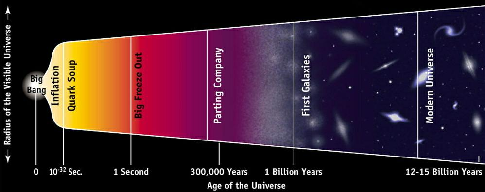
Eventually, some of the quanta form into constructions that obtain sentience. The groups of quanta with sentience are called "souls".
The souls realize that the way that they can grow and advance is to organize their quanta. There is only one problem. Quanta can only organize through entanglements. They need to entangle with other quanta.
The way entanglements work is through association, or better yet, experiences.
Our Bubble of Reality
So, in order to obtain these experience, the soul creates a bubble within Heaven.
It is an environment where the soul can obtain experiences. These “bubbles” are regions that can best be defined as a construction. They are constructed regions manufactured by a given soul to obtain experiences within. These regions are unique and custom for a given consciousness.
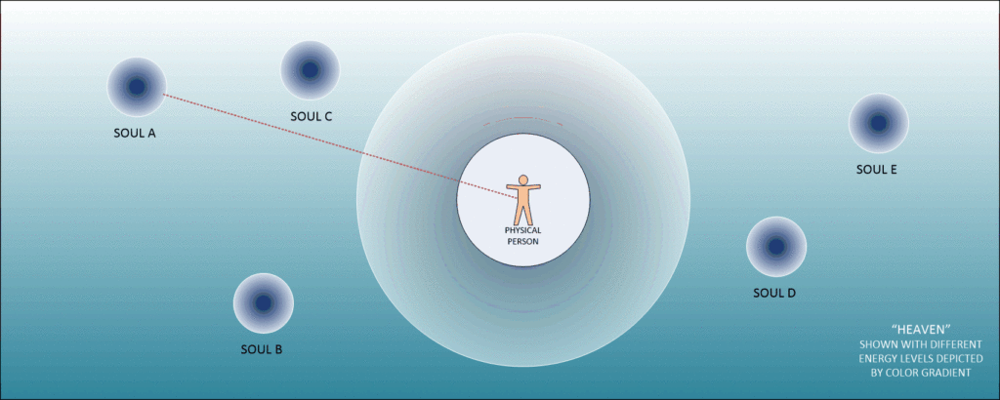
A soul would connect to this bubble of reality via a “tube” or an interface. We call that interface as “consciousness”. Souls can have multiple consciousnesses but only one consciousness may occupy a given reality at a time.
A bubble of reality consists of four set “dimensions”. Three spacial dimensions and one of entropy; time.
The "passage of time" is simply our reality bubble changing by our thoughts. Additionally, other nearby bubbles also move about and change. They can influence our bubble as well.
The control over this bubble of reality is quite possible. That is because our reality changes with our thoughts. Each thought changes it.
Thoughts of the consciousness within the reality can alter the reality. Thoughts can make or break the experiences of the consciousness. As such the soul can learn from the consciousness and it’s decision making process. This is of course, through manipulation of the three dimensions plus the “dimension” of time.
Consciousness experience events within the reality. As such they generate thoughts. The thoughts alter and create the reality that the consciousness exists within. As such, the consciousness obtains experiences and learns from them.
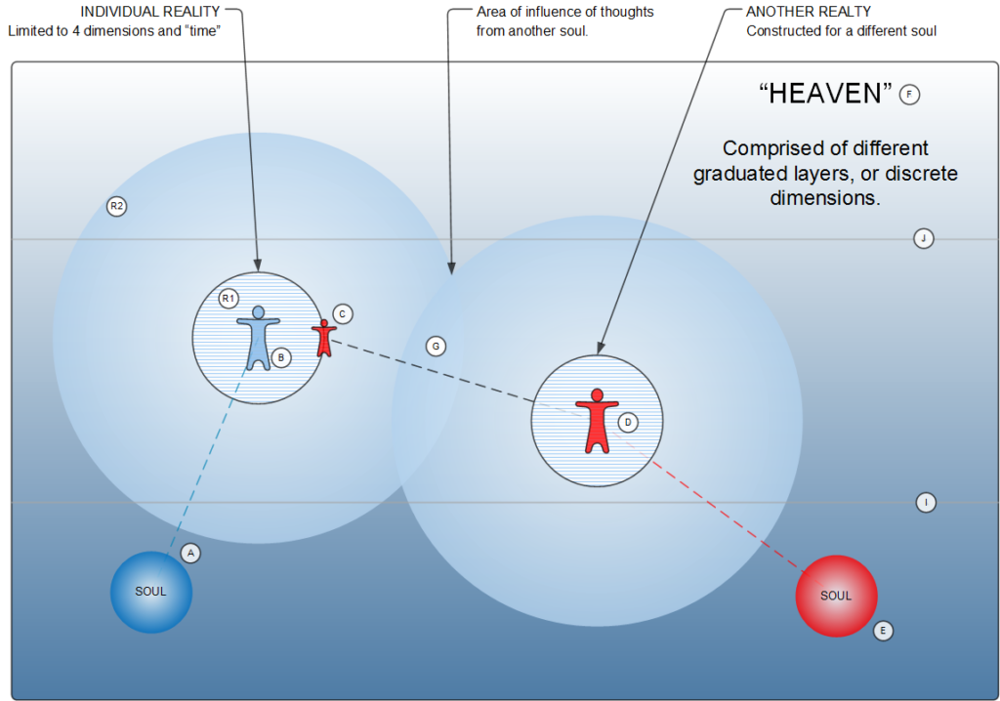
“Seen” dimensions typically are referred to as the physical world. While “unseen” dimensions are referred to as various levels or dimensions of Heaven.
But, what exactly is heaven?
Please refer to the image above. How “heaven” is organized. (above). This diagram if a simplistic version of what a human “heaven” looks like. Let’s suppose you (the reader) is sitting down in your house reading this manuscript. That figure is the icon of the blue person shown by (B). You exist within this “bubble” or reality also shown by (R1). This “reality” includes the chair you sit in, the television show that you are watching, and the coffee beside you.
Extending beyond your (physical) reality is your “extended” (non-physical) reality (R2) which consists of your thoughts, memories and everything associated with it (also known as the “quantum cloud”).
Your thoughts regarding what you are now reading are moving about in this (R2) reality. This area contains not only thought, but emotion and other generated “influences” (far too complex to discuss at this time).
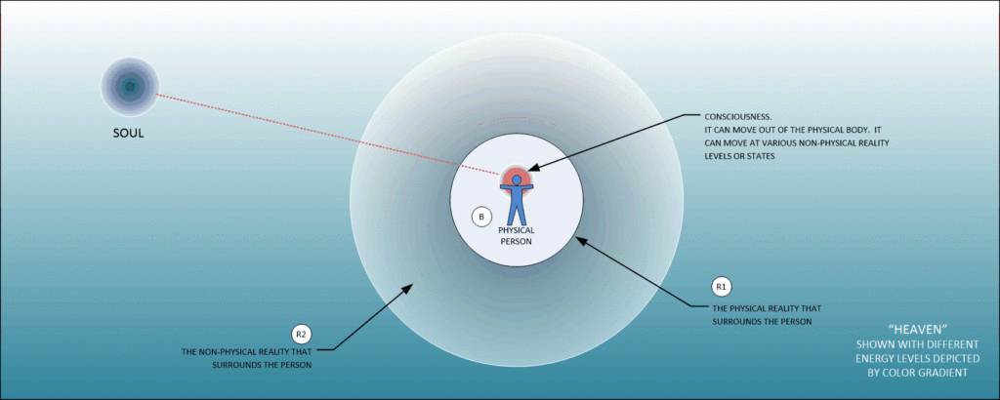
However, you have a soul (A) that is part of who you are. This soul only partially occupies your reality. In fact, it spends the vast bulk of it’s time outside of your “reality”. You know it exists, but you are unaware of it’s “day to day” experiences, challenges and behaviors.
Your soul can create numerous “realities” with numerous “individuals” (of which YOU are but one of the people that your soul creates) occupying those realities. This can occur at different times and at different locations. However, for now, let’s keep it simple and suppose your soul has created only one “realty” (R1) and (R2) for one person (B), you the reader.
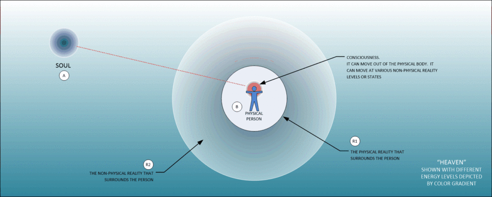
Now, let’s suppose that you are married to another person that is part of your life. (A pretty common situation.)
That person would be represented by (C) which is but a “quantum shadow” of another person. It is not the ACTUAL person. It only seems that way. (Though in your reality, that person is just as real as anything else in your reality.)
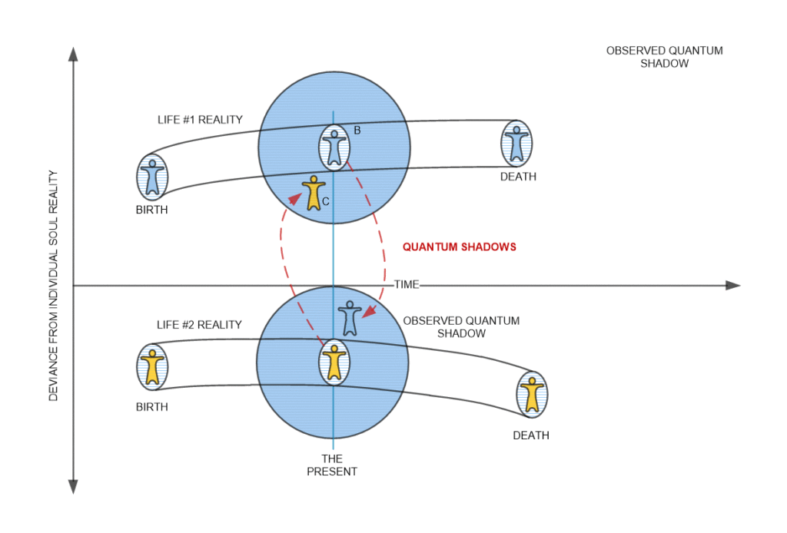
What you see is their world-line version of where they married you and share your reality. It is not an actual reality (from their point of view, but rather the world-line version of them). (Your quantum-shadow spouse is but one version of a near infinite number of world-line variations of that particular person.)
That person (D) is actually living within their own “reality “just like you are. They may or may not see a quantum shadow of you. It is all determined by their version of reality. This of course is determined by their soul (E).
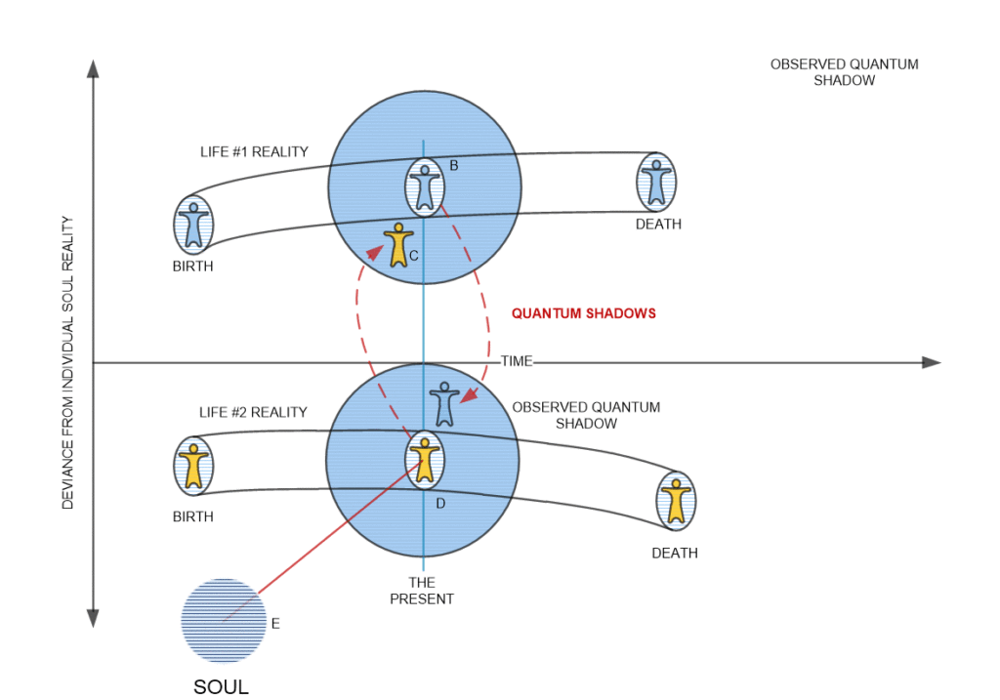
What is of most interest here is how their thoughts affect your reality (R1 & R2). While we all have our own “bubble” or reality that we live and exist within, our reality is constantly in flux by the thoughts of others (G). We view these effects as the “passage of time”.
The influence of the quantum-shadow of those nearest to us absolutely shape and mold the realities that we participate in. We can alter their influence by having “strong personalities”, or trying to isolate ourselves from others. However, the more we do so, the less likely we are to learn lessons and have experiences. It is the overlap of thought influences that create the experiences that we learn from.
Both your (A) soul and your spouse’s soul (E) exist within a heaven (F).
Your soul’s can work out different “realities” or “adventures” for both of you to share to obtain experiences.
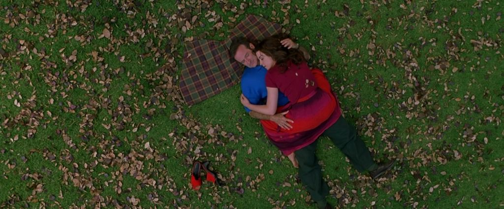
The idea, of course, is to obtain experiences and configure the quantum clouds associated with the constructed realities that the soul utilizes. As soul grows and configures itself, it can “improve” and evolve. Hopefully towards an approved soul archetype and sentience.
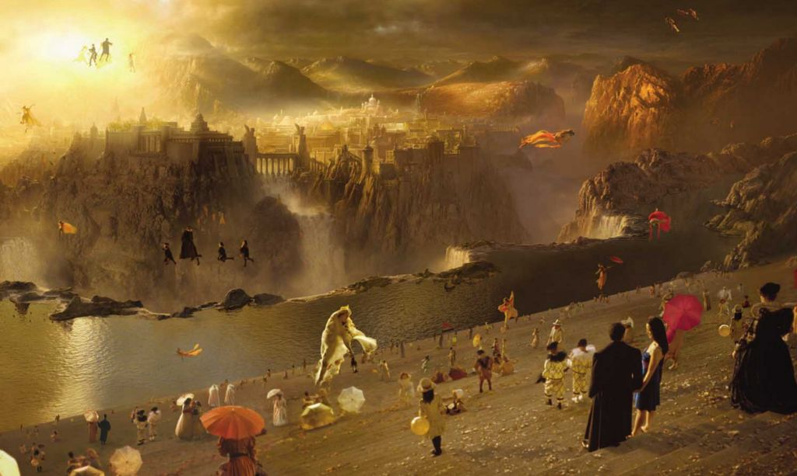
As it improves and grows, the vast bulk of it’s quantum configuration dwells at different energy states. Each different energy state has a different place in heaven (F). Two are indicated by (J) and (I).
To prevent confusion, I would suggest that the reader consider “reality” as the first three dimensions, plus “time” as the fourth dimension.
I would then suggest that the fifth dimension, as world-line swapping (alteration of the “reality” “bubble”). This is very easy to visualize by using the above-mentioned model. For to understand what is happening in this case, the “quantum shadows” within your reality are being rearranged.
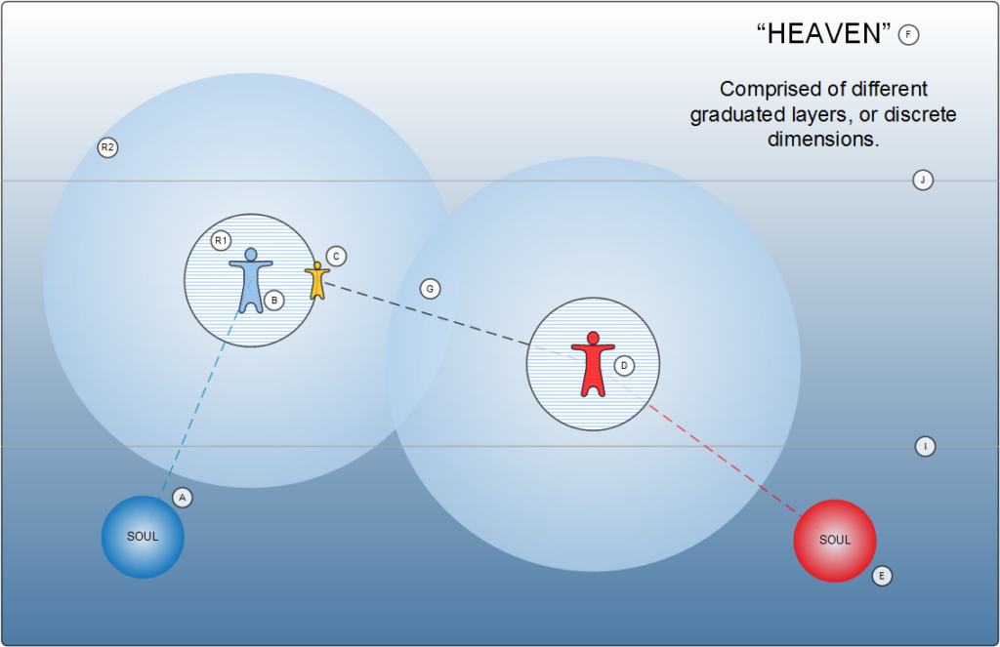
In “world-line” travel, all that is taking place is that the “quantum shadows” are being rearranged within one’s “bubble” of “reality”. This is fifth-dimensional travel. In the example above, Fifth-dimensional travel as world-line travel.
Quantum shadow (C) changes to fit the new revised “realty”. (It is now a yellow person instead of a red person.) We, as a participant within our reality look upon these changes as “world-line” travel.
From this point of view, it should be clear. That obtaining world-line dimensional travel is actually accessing our own soul and requesting it to alter our reality to fit our needs, while at the same time keeping the educational lessons that we are to obtain the same or better. This can be accomplished through certain techniques. In my case, we utilized a biological artifice to bend reality (within the confines of my experience structure).
So, in all actuality, there isn’t really any kind of “travel” at all. What is actually happening is the “reality” construct changes in accordance with the wants and needs of the soul.
If a given person, within a “reality” bubble wants to change his “world-line” he would be able to do so with the proper technology. However the changed “world-line” that manifests would be one that would either have the same and equal types of experiences for the soul, or that it would be one that would have more or “better” experiences.
There are even more interesting nuanced versions of “world-line” travel at the “higher” dimensional values. However, for our purposes, let’s keep it simple. I would then suggest anything above the fifth dimension as the realm of “heaven”.
Soul Summary
In summary, then the reader must recognize that the architect of our reality is our own soul. Our reality is a fabricated construct for the purposes of obtaining experiences, and learning so that the quanta (generated by thoughts) migrate into different forms. These different forms result in the shape of our soul. As such, different souls have different energy and positional states within heaven.
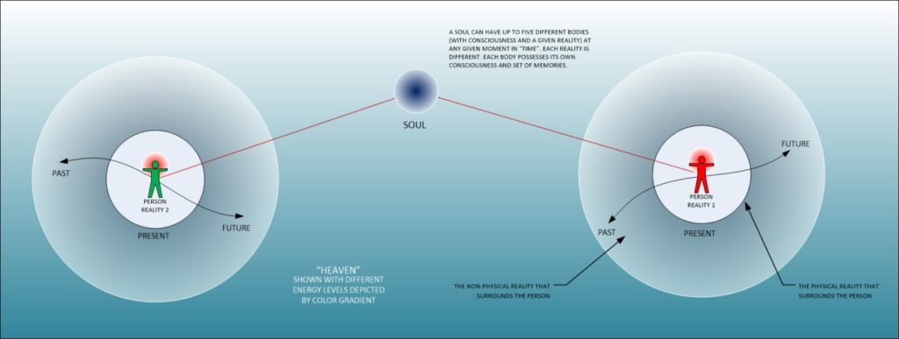
Multiple Dimensions Visualized
The reader might find it helpful to imagine multiple dimensions though a video or short movie. These products exist on the Internet. Some of the better ones include the following.
Now, the reader should not be confused, I am not an expert on this. All that I am is a traveler who utilized the MWI for MAJestic purposes. This video helped me personally better understand what transpired through my experiences.
- Imagining the Tenth Dimension – Rob Bryanton (Introductory.)
Well, there are those who completely disagree with this theory and the belief in multiple dimensions and world-line travel.
I believe in the MWI because I was part of MAJestic and I participated in it. So it was easy for me to believe. Others are not so easy to convince. Trust me, I went through some pretty convincing MWI slides let me tell you the reader. Do you want to read about my "training"? Go here...


Here’s another couple of videos…
- TEDxBoulder – Thad Roberts – Visualizing Eleven Dimensions (Pretty darn good precisely as he covers the actual “reality” of what space actually is.)
- Imagining 10 Dimensions – the Movie (It takes the first video and goes into multiple world-line theory. Worth the viewing time.)
The First, Second and Third Dimensions
Let us begin with a talk about the known and observed world; the physical.
This is the reality that we can perceive, and that we think all other biological creatures can also perceive. It is this realm that almost all the known science and engineering feats of the last century were built upon.
The first dimension, as already noted, is that which gives it length (aka. the x-axis). A good description of a one-dimensional object is a straight line, which exists only in terms of length and has no other discernible qualities. Pretty boring. Indeed. But, add to it a second dimension, the y-axis (or height), and you get an object that becomes a 2-dimensional shape (like a square). Now things get interesting. For we can have art, and pictures and blueprints. The third dimension adds breath and scope. It is the “z” axis of our observable universe. These three dimensions are what describe 3D space; or 3D movies, or 3D CAD software. It is nothing less than what we can experience with our senses.
How we thought it worked…
While this sounds so simple, in truth the mathematics of it can be quite formidable.
At the time when I was involved in MAJestic, we were “pretty sure” that the dimensions that we observed (the 3D world) were but a hologram. This idea, the universe as a hologram, was first proposed in the 1990’s by physicists Dr. Gerard ‘t Hooft and Dr. Leonard Susskind as a way to solve a fundamental inconsistency between quantum physics and general relativity.
At the time, research showed that the holographic principle held in theoretical worlds (The anti-de Sitter spaces.). But, the scientists were pretty baffled, because evidence suggesting that it holds under the conditions found in our own universe had been limited. The issue then was validation of the principles proposed in flat space-time.
At the time of this writing, easily over ten years since I left MAJestic active duty, physicists used two theories of flat space-time to calculate a physical measure known as “entanglement entropy.”
The term describes the amount of entanglement in a quantum system. This is where particles are linked and exert influence on each other across a distance; “entanglement”.
Thus, if quantum gravity in a flat space allows for a holographic description by a standard quantum theory, then there must by physical quantities, which can be calculated in both theories.
The reader need not get too hung up on terms and phrases. Terms can be confusing. This is most common when new terms and phases are introduced “rapid fire” with little utility or context to initiate familiarity. Entropy is just a way of measuring a characteristic or property of something. In this usage, it refers to just how many quanta are entangled.
Indeed, they found that the value of the entanglement entropy in both theories was the same, which means it is possible the holographic principle does actually apply to our universe and by extension, our universe could be holographic. If so, then it is bound by the controls established by the other dimensional levels; “Heaven”.
So, let’s look at what Heaven actually is. For the purposes herein, let us consider Heaven to be all the other dimensions described by mathematics outside of the first three dimensions. Further, let us be rather simple, and refer to all the dimensions of heaven either as “dimensions” or as “levels”.
These are my conventions only, and the reader is free to utilize their own as they desire.
The Fourth Dimension
While the third dimension involves depth (the z-axis), and gives all objects a sense of area and a cross-section. (The perfect example of this is a cube, which exists in three dimensions and has a length, width, depth, and hence volume.) Many people think that that is where dimensional space ends.
That is not true.
For indeed, beyond these three lie the seven dimensions which are not immediately apparent to us, but which can be still be perceived as having a direct effect on the universe and reality as we know it.
Many scientists believe that the fourth dimension is time, which governs the properties of all known matter at any given point. (I am one such person who does not associate or believe that “time” is a dimension.) Along with the three other dimensions, knowing an objects position in time is essential to plotting its position in the universe. The other dimensions are where the deeper possibilities come into play, and explaining their interaction with the others is where things get particularly tricky for physicists.
Time is a tricky subject.
It should not exist mathematically, but it is perceived to exist by our physical bodies. Our extraterrestrial friends tell us that time is not what we think it is, and we should be very careful using this term correctly. They describe it as a non-critical aspect of the equations of reality that “cancels out” in utility.
The reader can consider this fourth dimension as “time” or as “volume”. What ever it is, it is a fundamental part of the reality that we experience.
For reasons of simplicity, let’s just consider the fourth dimension as something rather simple. The fourth dimension is a barrier that wraps up all the other dimensions together. (I know it’s a cop-out, but that is how I deal with it on a personal level.)
The Fifth Dimension
“You develop an instant global consciousness, a people orientation, an intense dissatisfaction with the state of the world, and a compulsion to do something about it. From out there on the moon, international politics look so petty. You want to grab a politician by the scruff of the neck and drag him a quarter of a million miles out and say, ‘Look at that, you son of a bitch.” ― Edgar D. Mitchell
According to Superstring Theory, the fifth and sixth dimensions are where the notion of possible “Heavenly” worlds arises.
If we could see on through to the fifth dimension, we would see a world “slightly” different from our own that would give us a means of measuring the similarity and differences between our world and other possible ones.

This is where all those great “what if”, and alternate reality science fiction stories come from. (But that is not really true, those are fanciful fictional adventures. The reality is similar but quite different in all functionality.)
The fifth and six dimensions are NOT where those of the “new age” movements would refer to this as the astral or other “planes” of existence. Those are the NON-PHYSICAL realms that are associated with the physical reality. The astral, casual, and other planes described in various Eastern religions are the “non seen” realms associated with our physical (seen) reality. They have three dimensions plus time / volume. They are NOT elements of the fifth, sixth, or higher “dimensions”.
In this fifth dimensional existence and energy state one can “travel” or become immersed into the concepts of “alternative worlds” quite easily. As it is a universe of probability and alternatives.
Fundamentally, at the fundamental or base level it is a place of higher energy quanta. (A first level or gateway towards variations of discrete quantum behavior. This is where they apparently appear to pop in and out of existence. But that is only from our particular view point.)
The reader should recognize that this is the world of “alternate universes” such as described in the movie trilogy “back to the Future”, or in the books by Robert Heinlein, “The cat that could walk through walls”, “The number of the beast” and “Job”.
The Number of the Beast is a science fiction novel by American writer Robert A. Heinlein, published in 1980. The first (paperback) edition featured a cover and interior illustrations by Richard M. Powers. Here four individuals travel in a modified air car named Gay Deceiver, which is equipped with the professor's "continua" device and armed by the Australian Defense Force. The continua device was built by Professor Burroughs while he was formulating his theories on n-dimensional non-euclidean geometry. The geometry of the novel's universe contains six dimensions; the three spatial dimensions known to the real world, and three time dimensions - t, the real world's temporal dimension, τ (tau), and т (teh). The continua device can travel on all six axes. The continua device allows travel into various fictional universes, such as the Land of Oz, as well as through time.
Fifth Dimension Travel Limitations
The fifth dimension is only accessible by creatures with a “Service to others” sentience. (And their resulting soul configurations.) For us humans to access these dimensions we would need to utilize mechanisms as described earlier, or in my case, entangle with an extraterrestrial with a multi-dimensional soul configuration.
As far as I know, ONLY service-to-others sentience can access world-line travel using the techniques that I am aware of.
That is because “service-to-self” sentience’s spawn a different type of world-line. Yes, they can travel, but the nature of the worlds so created are too addictive to the traveler. They tend to be snared inside their own creations. They find it impossible to leave.
MAJestic Access to Fifth Dimensional Travel
The dimensional portal as described elsewhere was a fifth-dimension portal.
 MAJestic utilizes this portal as a transport mechanism. It takes the individual to certain destinations. These destinations, while they are on different “world-lines”, are all very similar to the egress “world-line”. As such this method can be used for apparent geolocation travel, apparent time travel, and (of course) used to take the members and agents to safe and secure “world-lines” where MAJestic and extraterrestrial benefactors are located.
MAJestic utilizes this portal as a transport mechanism. It takes the individual to certain destinations. These destinations, while they are on different “world-lines”, are all very similar to the egress “world-line”. As such this method can be used for apparent geolocation travel, apparent time travel, and (of course) used to take the members and agents to safe and secure “world-lines” where MAJestic and extraterrestrial benefactors are located.
Who needs a rocket ship when you can just walk through a portal?
Risks
This type of portal egress can only function properly if the person is of a set defined sentience. That sentience is “Service for others”.
Were a service-to-self person were to pass through the portal, they would end up in an environment that would not match that by with the MAJestic organization had created. They would enter and disappear (relative to MAJestic leadership).
What the individual would experience would be anyone’s guess.

However, I would dare say that it would not fit the programming of the portal. To lie on the form. To lie to the commander, and to have an intention other than what the benefactors would provide would be quite lethal to the traveler. Not only to the physical body, but the soul consciousness as well.
I assume it would be lethal. Maybe it wouldn't. Maybe all that would happen is that they enter a reality that does not match what the gate was programmed for and does not align with their thoughts. Maybe they would enter a really messed up world-line. Some ideas of what they might end up in, for shits and giggles, could be... A world-line that is perfection. A service-for-self person might find themselves on a world-line where they live a very satisfying and perfect life. One, so amazing and so tantalizing, that they would never desire to leave it. Maybe a little like the Ray Bradbury story "Here there be Tygers".

A world-line that is dominated by Service-to-self individuals. They might find themselves as a slave in a harem or a drone-worker under very primitive conditions. Here they would not be the "top dog boss", but rather on the other side of the spectrum. They might end up living a very terrible life with no way out of it. They might damage their consciousness, or their soul. We exist within this reality for a purpose. To try to thwart our purpose could have dangerous consequences for the uninitiated. How about a terrible reincarnation cycle that might last centuries? Or perhaps, a long sequence of reincarnated lives as a cripple, a mental retard, or some other hardship. It could be horrible. They might find themselves materializing as something other than a human.Maybe they egress as a monkey or a goat. Or maybe they egress to a world-line where they are invisible, or very, very sick. They might find themselves in a world-line without hands or feet. Such as what was portrayed in the movie "The Butterfly Effect".
The “Fifth Dimension” Summary
- Is the realm of “what if” worlds or alternative World-lines.
- With the proper technology, travel in the fifth dimension is possible. (World-Line travel.)
- Certain soul archetypes naturally have this ability to travel within the fifth dimension.
- The human mind can meditate and “touch” this reality, but will not experience it without soul permissions.
- Our inherent “soul permissions” limit our travel to four dimensions obviously, however we can control fifth dimensional reality by mental discipline. In fact, we can control the migration of our reality by thought (fifth dimensional ability).
- MAJestic uses fixed technology for fifth-dimensional travel. This is both geographic, temporal, and of course world-line variant.
The Sixth Dimension
“Who is more real? Homer or Ulysses? Shakespeare or Hamlet? Burroughs or Tarzan?” ― Robert A. Heinlein, The Number of the Beast
As in many of his later works, Heinlein refers to the idea of solipsism, but in this book develops it into an idea he called “World as Myth”. This is the idea that universes are created by the act of imagining them. Which is pretty much the way it actually works. Thus in his later writings, all fictional worlds are in fact real and all real worlds are figments of fictional figures’ fancy. This is why Heinlein uses the Ouroboros symbology in later works like The Cat Who Walks Through Walls. This also plays into the ideology of “Thou Art God” from Heinlein’s earlier work Stranger In A Strange Land.
In the sixth dimension, we would see a plane of all the possible worlds, where we could compare and position all the possible universes that start with the same initial conditions as this one (i.e. the Big Bang).
In this plane of all possible universes, everything is possible. The fictional worlds that you have read about and watched can be just as real as your today is.
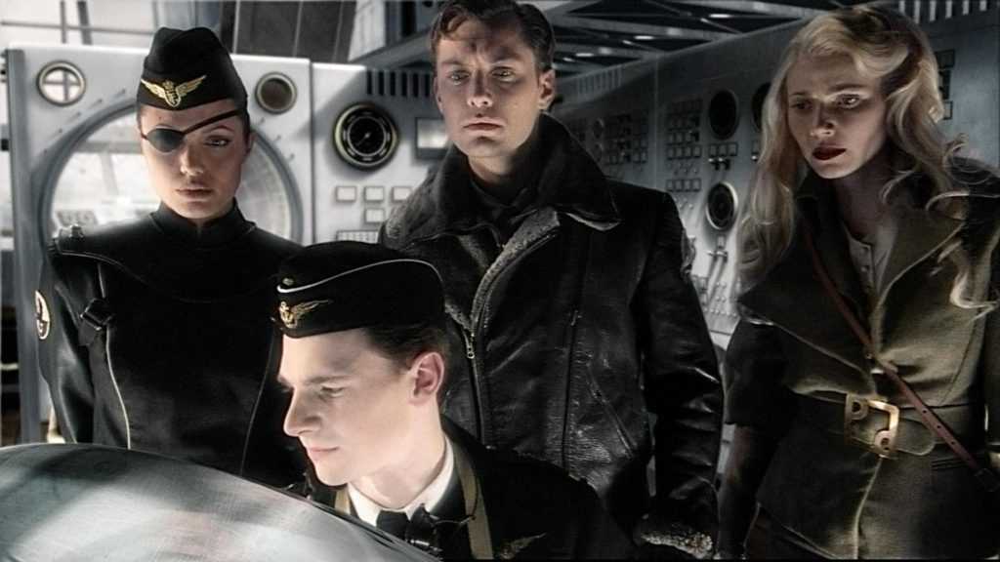
Indeed, in theory, if you could master the fifth and sixth dimension, you could travel back in time or go to different futures. Thus lending support to the idea that time does not really exist, but is rather a mathematical construct that controls the entropic states of the lower three dimensions.
Those in the “new age” movement might refer to this as the “higher” planes of existence. Such as “casual”, the “mental”, and “spiritual” planes. (But actually, all of the spiritual names and concepts for this dimensional existence are but simplistic terms and definitions for a complex behavior of groups of arranged quanta.) For our purposes, in regards to “Heaven”, these are “higher energy states” that are reachable given proper training and the right quantum makeup. Never the less they are nothing more than the “unseen” reality of our current “seen” physical reality. They are NOT elements of dimensions higher than the 4th dimension.
Access to dimensional states; the “higher” levels of Heaven is determined by one’s sentience.
- “Service to others” sentience permits travel to higher states of heaven.
- “Service to self” sentience” is very limiting and does not permit travel to these higher levels. Typically, a “Service to self” sentience is limited to this dimensional heaven and would be unable to advance further.
Some special soul configurations such as the <redacted> possess a unique sentience. I refer to this sentience as a “Stilted Service to self” sentience. It provides the illusion of higher order excursions, but does not actually grant this ability. It is all an illusion.
In the quantum world, the residences or “planes” or existence for the soul; “Heaven” exist in these dimensions. Most interactions with quanta and quantum level devices occur in this dimensional construct. (And it is an actual construct. These constructs are generated by the powers of group thought.)
The “sixth dimension” Summary
- Can be considered to be what many consider to be “Heaven”.
- Is the realm of the various “levels” and planes of existence that humans recognize.
- Is the realm of all possible world-lines, and all possible time-lines, and all possible layers of “heaven”.
- This is an infinite number of alternate world-lines, time-lines, and Heavens.
- Mastery of six dimensional travel is possible with certain soul configurations.
- Some earth creatures have this ability, and we as humans are unaware of this fact.
Personally, I like to think that sixth dimensional travel in one where you can visit all the possible alternative world-lines AT ANY TIME along their time progression.
I don’t know how accurate this thought is, but it would be possible in that it would involve porting of Heavenly abilities. As such, the most amazing world-lines would be possible.
Ah. Some creatures are capable of living within a sixth dimensional reality due to the nature of their souls. They live in peace even though their situation might be far from it. We as humans do not give this any concern, nor do we even consider it. Yet it is a reality.
The Seventh Dimension
Consider a universe that transcends physical laws (rules) and the template of our reality.
In this reality, there are “new” or “different” physical laws.
In the seventh dimension, you have access to the possible worlds that start with different initial conditions. Whereas in the fifth and sixth, the initial conditions were the same and subsequent actions were different, here, everything is different from the very beginning of time.
It is extremely difficult to visualize this kind of reality. Think of this as everything in the universe from the Big bang to every possible future; all of which is accessible by the observer at any given moment.
However, this need not be so strange. Elsewhere, I refer to this dimension from a more practical aspect; that of “shadow world-lines” spawned off of a soul’s primary (world-line).
The “seventh dimension”;
- Is an infinite number of “six dimensional” states.
- This includes all versions of reality that seem to violate known physical laws, the universe, and everything that we know and could possible conceive of. Up to the sixth dimension, all the physical laws of reality was established and fixed.
- The human brain has been identified to work into the seventh dimensional space.
- This includes other “Heavens”. In the seventh dimension one could travel between a “Human Heaven”, a “Canine Heaven”, a “Feline Heaven”, and a “<redacted> Heaven” etc.
This is a reality where intelligent pencils can give birth to erasers. This is a reality where water can talk to the person who drinks it. This is a reality where dreams transform into physical events.
In this dimension anything can happen. Anything.
The Eighth and Higher Dimensions
It only get’s stranger. (Is that even possible?)
The eighth dimension again gives us a plane of such possible universe histories, each of which begins with different initial conditions and branches out infinitely (hence why they are called infinities). This is infinitely larger than the seventh dimension. For every alternate world is possible here.

It is difficult for humans to conceive. For our purposes here, let’s just agree that humans are incapable of understanding these higher dimensions simply because our brain is only capable of seventh dimensional operation. Anything higher in order is beyond our comprehension.
+ + +
The creation of these world-line universes is a function of thought.
They are the direct and absolute consequence of thoughts and ideas, and thus the necessity of nurturing such thoughts are manifest. Indeed, instead of reciting the bland, we must awaken our imaginations.
Let me close with a quote pertaining to the destruction of a magnificent library so that a more contemporaneous and “modern” one can take it’s place. What a sad, sad loss;
“Yet when the doors closed forever … and wise heads declared that Old Main would never be missed, they were wrong. Because here we are, wishing we had somewhere like this to let our imaginations run wild.” -John Fleischman, author of Free & Public, along with commentary from Messy Nessy.
Conclusions
My personal role within MAJestic involved dimensional anchoring the various aspects of the MWI. I do not understand the technologies involved, I only know what I experienced. This is my best guess and understanding on how I believe the system works. I pulled this all out of my head, and I have no clue as to whether it is accurate or not. I only know that this is how I personally feel and believe everything works.
It is presented for the reader for your enjoyment and consideration.
Take Aways
- To understand dimensional travel, you must first understand how the universe is set up.
- Once, you understand that there are bubbles of reality, and each one is custom for use by a given consciousness, a person can alter their reality utilizing technology.
- Soul will permit consciousness alteration of reality provided that it will result in the proper experiences and quantum entanglements.
- Simple and slight modifications of the MWI happen every day. It is a world of intention and prayer.
- More complex modifications require either [1] technology, or [2] “piggy backing” on to an entity with this ability.
- There are various “levels” of dimensional travel, but functionally, I only know what I have personally experienced.
FAQ
Q: If you had the ability to surf the MWI, as you said, why aren’t you living as a rich king in a palace or enormous mansion?
A: Prior to my retirement I did what I was instructed. I ended up in all kinds of different worlds. Some were so very disturbing. During my retirement at ADC Pine Bluff, I was able to retire to a world-line that would be deserving of my own personality. So, I ended up here.
It’s a little under a 5% deviance from my final MWI slide.
This is a pretty BIG deviance. Over the years, the MWI slides vacillated a few percentages over and around. Large deviance’s became rare. So, once the anchoring role was completed, I was permitted to have a deviation that was suitable for me personally.
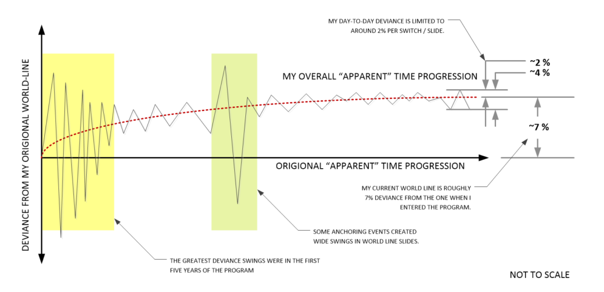
Initially, I was really, really shocked when I entered this world-line.
This world-line is really nothing at all like the ones that I was working towards. This world line is shocking. The American government is so very corrupt, a negro non-American was elected president, NASA was being dismantled, taxes were about double of what I was used to paying and I was earning less, instead of the United States being in a singular war in Africa, we were involved in eight wars simultaneously, and American girls were terribly, terribly, terribly fat and ugly.
That’s not all. There were no space planes, instead the space shuttle was shut down and we were using Russian spacecraft to get the space-station! It wasn’t even called “The Freedom Space station”, it was called the international space station. Industry was nearly completely off-shored, and most Americans “in the heartland” were unemployed, on opioids, and living off welfare.
Public drinking, smoking, and sleeping was not only banned, but against the law. However, marijuana was pretty much legal. Children were getting arresting for selling lemonade, football games had changed into negro hate-whitey race rallies, and most malls no longer existed. You need to wear a protective helmet and protection to ride a simple bicycle, and coffee cost $5 a cup!

To me, this world-line is a absolute fiasco. However, this world-line (by other previous enabled actions) permitted me to migrate to an area that better fit my own ideas of perfection. Honestly, America is completely and positively different from what I have been exposed to. Put yourself into my shoes. Imagine living life and lifestyle along the lines of what it was around 1975, and then find yourself suddenly thrown into modern America under President Obama.
It’s one heck of a big shock.
So when I arrived, I just had to get out. For the rest of my fellow Americans, they are just the frog sitting into the boiling water. However, for me, I was suddenly placed in the water alive while it was vigorously boiling. Yikes! This was not what I thought my final egress destination would be.
However, things fell into place. My final destination was not modern contemporaneous America as I assumed. My final destination was modern contemporaneous communist China.
So here I am in friggin’ communist China.
I am happy.
Fools think that more money creates a wonderful life. There are many other aspects of life that define your own personal comfort within your world line. It includes where you live, what you do, your personal satisfaction, your spouse, your lifestyle, how your spouse looks, your pets, your hobbies, and the respect that you get from others.
Seriously, I don’t know about you, the reader, but I do not think that I would be happy in a place where I couldn’t drink beer in a restaurant with my dog and smoke a cigarette. This is a personal freedom that I am accustomed to enjoying. Then I suddenly find myself in an America where even this most basic of freedoms, no longer exists! Come on!
I ended up here where I can live my life in peace and happiness.
What is paradise to one person, could very well be a living Hell to another.
It’s all about trade offs. There is no way that I could retire to a world-line that had everything that I wanted without any trade offs. Remember, you do not learn to appreciate rain until you lived in the desert. That is absolutely true no matter where your MWI slides to. This reality must be one where my soul can organize quanta to my advantage.
All in all, I am pretty happy with my retirement. It’s far better than any of my contemporaries. No, I am not rich. Not in the least. But, I have a really nice and relaxing life. I am surrounded by happy, sunny and attractive people. I eat very well, and am happy. So, I think that my life is just fine, thank you.
My life is really, really different than the people that I left behind in the United States. I really like it.
Q: How were you able to surf the MWI?
A: Initially, I used a fixed portal. This required the implantation of two “kits” of specialized probes in my skull, and special training.


This first portal egress took me to a <redacted> medical facility where a different set of probes were implanted. These other probes, the EBP, enabled me to be entangled in real-time with <redacted> that had a natural ability to surf the MWI.
Q: What if what you think is wrong?
A: It could be. I am often wrong and I have made a lot of mistakes in my past. For instance, I was swindled numerous times. I made some pretty terrible decisions, and once was audited by the IRS. Certainly, I am far from perfect.
If there is but one thing that you, the reader, can learn from this it is very simple. YOU are in control of YOUR reality. Your thoughts change your reality. So you must carefully card what you think about.
You have to be careful about you think about.
Honestly, if you need to, stop reading the news. If you get angry reading the news, then you must stop reading it. The mainstream media no longer REPORTS on NEWS. they are a propaganda device used to manipulate you. For you to live a great life, you need to stop being manipulated.
For you to live a great life, you need to stop being manipulated.
MAJestic Related Posts – Training
These are posts and articles that revolve around how I was recruited for MAJestic and my training. Also discussed is the nature of secret programs. I really do not know why the organization was kept so secret. It really wasn’t because of any kind of military concern, and the technologies were way too involved for any kind of information transfer. The only conclusion that I can come to is that we were obligated to maintain secrecy at the behalf of our extraterrestrial benefactors.


MAJestic Related Posts – Our Universe
These particular posts are concerned about the universe that we are all part of. Being entangled as I was, and involved in the crazy things that I was, I was given some insight. This insight wasn’t anything super special. Rather it offered me perception along with advantage. Here, I try to impart some of that knowledge through discussion.
Enjoy.


MAJestic Related Posts – World-Line Travel
These posts are related to “reality slides”. Other more common terms are “world-line travel”, or the MWI. What people fail to grasp is that when a person has the ability to slide into a different reality (pass into a different world-line), they are able to “touch” Heaven to some extent. Here are posts that cover this topic.


John Titor Related Posts
Another person, collectively known by the identity of “John Titor” claimed to utilize world-line (MWI egress) travel to collect artifacts from the past. He is an interesting subject to discuss. Here we have multiple posts in this regard.
They are;